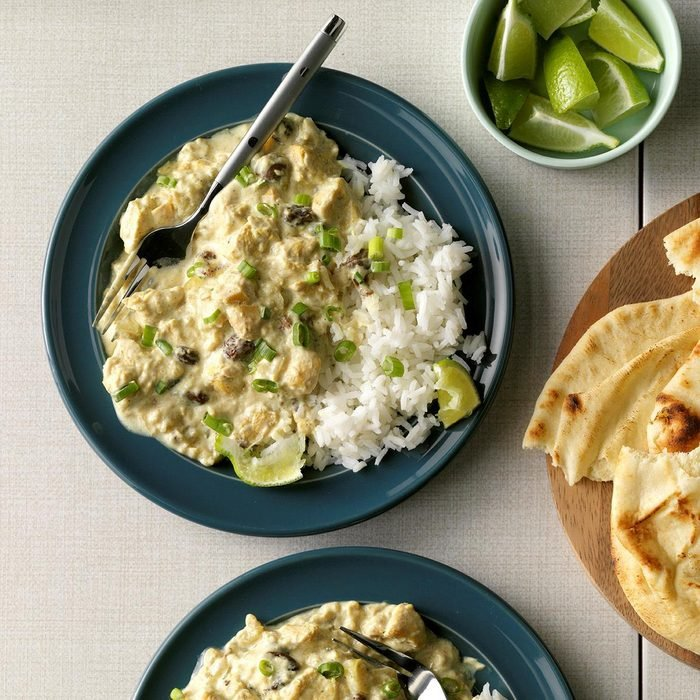

Tasty chicken curry for two!

How would you describe a chicken curry?
A typical curry from the Indian subcontinent consists of chicken stewed in an onion- and tomato-based sauce, flavoured with ginger, garlic, tomato puree, chilli peppers and a variety of spices, often including turmeric, cumin, coriander, cinnamon, and cardamom.
Ingredients list
- 1 small onion, sliced
- 1 tablespoon plus 1/3 cup water, divided
- 1/2 pound boneless skinless chicken breasts, cubed
- 1 small apple, peeled and chopped
- 1/4 cup raisins
- 1 garlic clove, minced
- 1 teaspoon curry powder
- 1/4 teaspoon ground ginger
- 1/8 teaspoon salt
- 1-1/2 teaspoons all-purpose flour
- 1 teaspoon chicken bouillon granules
- 1/2 cup sour cream
- 3/4 teaspoon cornstarch
- 1 tablespoon thinly sliced green onion
- Hot cooked rice
So how do we make it?
- Place onion and 1 tablespoon water in a microwave-safe bowl. Cover and microwave on high until crisp-tender, 1 to 1-1/2 minutes.
- In a 1-1/2-qt. slow cooker, combine the chicken, apple, raisins, garlic, curry, ginger, salt and onion. Combine the flour, bouillon and remaining water; pour over chicken mixture. Cover and cook on low until chicken juices run clear, 3 to 3-1/2 hours.
- Bring sour cream to room temperature. Remove chicken mixture to a bowl; keep warm. Transfer juices to a small saucepan. Combine cornstarch and sour cream until smooth; add to juices. Cook and stir over medium heat until thickened. Pour over chicken mixture; toss to coat. Sprinkle with green onion and serve with rice.
Return to main page